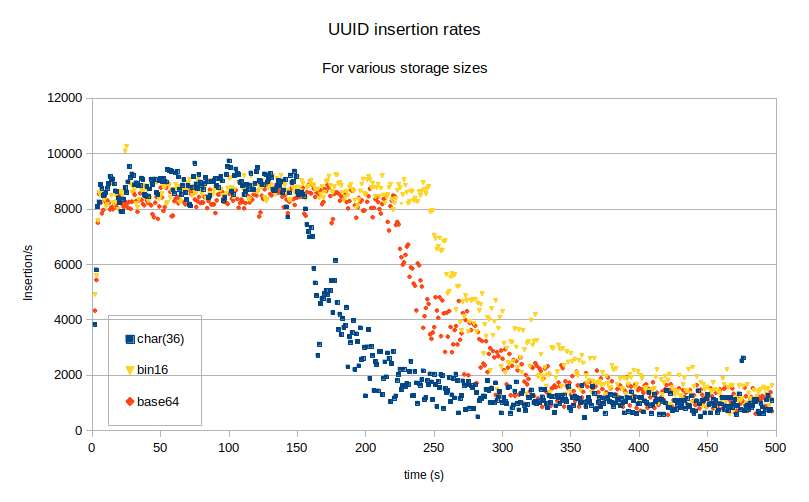
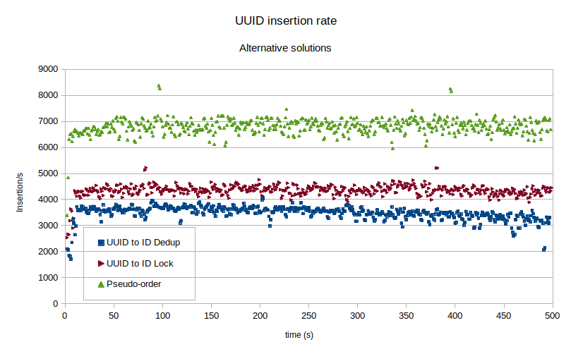

在网上搜索UUID方案和MySQL，你能查到一大堆结果，比如：
- 存储UUID和Generated Columns
- 在MySQL中存储UUID值
- InnoDB中的主键模型及它们对磁盘使用的影响
- MySQL UUID Smackdown: UUID与整型的主键对比
- GUID/UUID性能突破
- 用还是不用UUID？
所以对于资料如此完善的话题还需要更多讨论吗？很明显是要的。尽管很多文章都是提醒人们少用UUID方案，但它们还是很受欢迎。受欢迎的原因是UUID值可以很方便地由远程设备生成，并且冲突概率非常低。这篇文章里我的目标是总结其他人写的内容，并且尽可能提出一些新的观点。
什么是UUID方案？
UUID即全局唯一标识符（Universally Unique IDentifier），在RFC 4122定义。它的格式是128位，16进制，由“-”分割成5部分。典型的UUID值如下：
yves@laptop:~$ uuidgen
83fda883-86d9-4913-9729-91f20973fa52</code></pre>
官方来说，一共有5类UUID值，版本1-5,但最常见的是：基于时间的版本（版本1或版本2）和纯随机的版本（版本3）。基于时间的UUID方案将1970年1月1日以来的10ns数量编码成7.5字节（60位），分割为“time-low”-“time-mid”-“time-hi”的样式。空缺的4位是用在time-hi段作为prefix。这样前三段的64位就定下来了。后两段是时间序列即一个随时间改动而增加的值，和宿主唯一标识符（host unique identifier）。大多数时候，当前宿主网络的MAC地址都会被用来当作唯一标识符。
在使用基于时间的UUID时，有几个重要的点需要考虑：
- 在前三段的值生成后，就可以用来确认大致的时间
- 在连续的UUID值中会有大量重复的段
- 第一段“time-low”每过429秒就会耗尽重置
- MySQL UUID函数产生的是版本1的值
以下是使用“uuidgen”Unix工具产生的基于时间的UUID值：
yves@laptop:~$ for i in $(seq 1 500); do echo "$(date +%s): $(uuidgen -t)"; sleep 1; done
1573656803: 572e4122-0625-11ea-9f44-8c16456798f1
1573656804: 57c8019a-0625-11ea-9f44-8c16456798f1
1573656805: 586202b8-0625-11ea-9f44-8c16456798f1
...
1573657085: ff86e090-0625-11ea-9f44-8c16456798f1
1573657086: 0020a216-0626-11ea-9f44-8c16456798f1
...
1573657232: 56b943b2-0626-11ea-9f44-8c16456798f1
1573657233: 57534782-0626-11ea-9f44-8c16456798f1
1573657234: 57ed593a-0626-11ea-9f44-8c16456798f1
...</code></pre>
第一段的值（在t=1573657086）重置，第二段值会增加。每过大约429秒就会在第一段看到类似的值。第三段值每年变1次。最后一段值在同一台的宿主机上是固定的，就是我的笔记本上的MAC地址：
yves@laptop:~$ ifconfig | grep ether | grep 8c
ether 8c:16:45:67:98:f1 txqueuelen 1000 (Ethernet)</code></pre>
另一种常见的UUID版本是版本4，纯随机。默认情况下，Unix“uuidgen”工具生成的是版本4的UUID值：
yves@laptop:~$ for i in $(seq 1 3); do uuidgen; done
6102ef39-c3f4-4977-80d4-742d15eefe66
14d6e343-028d-48a3-9ec6-77f1b703dc8f
ac9c7139-34a1-48cf-86cf-a2c823689a91</code></pre>
唯一重复的值是版本“4”，在第三段的开头。其余的124位都是随机的。
UUID值有什么问题？
为了理解UUID用作主键的影响，首先要复习一下InnoDB是如何组织数据的。InnoDB将表中的行存储在主键的B树中，在数据库中我们称之为聚簇索引。聚簇索引自动将数据行按主键顺序排列。
当你插入一行随机主键值的数据，InnoDB需要找到这行应该属于哪一页，如果页没在缓冲池中则将其加载进缓冲池，插入数据行，最后将脏页刷回磁盘。纯随机值加上大表使得B树上的每个叶子节点都有机会插入行，而没有热点数据页。数据行不按照主键顺序（译注：主键顺序指主键顺序的末端）插入会导致页的分裂，进一步导致页的填充因子降低。在缓冲池中，有新数据插入的页称为脏页。而缓冲池中的页在被刷回磁盘前再次有新数据需要写入的概率很低。所以大部分时间中，每次插入操作会导致两次IO过程——一次读取和一次写入。所以首先UUID会对IO操作的比例造成影响，而这个又是伸缩性的主要限制因素。
获得高性能的唯一方法就是使用低延迟和高耐久的存储介质。然而这又是一个对性能造成影响的因素。因为聚簇索引的存在，辅助索引需要使用主键值作为指针。主键B树的叶子节点存储数据行，而辅助索引的叶子节点存储主键值。
我们假定有一个UUID作主键的表，并且有5个辅助索引，一共10亿行数据。如果你读了前面的段落，你会知道每行主键值被存了6次。也就是说一共6亿的36字节字符串值，216GB。这只是冰山一角而已，因为表通常还会有外键，显式或者隐式地指向其他表。当表是基于UUID设计的时候，列或者索引需要以char(36)来容纳数据。最近我分析了一个基于UUID的表，发现70%的存储空间都用来存放UUID值。
不止这些，UUID还有第三点影响。整型在CPU中一次性可以比较8字节，而UUID是逐字节比较的。数据库很少会受限于CPU性能，但是不管怎么样这都会提高查询的延迟。如果你不信，来看看整型和字符串的性能对比：
mysql> select benchmark(100000000,2=3);
+--------------------------+
| benchmark(100000000,2=3) |
+--------------------------+
| 0 |
+--------------------------+
1 row in set (0.96 sec)
mysql> select benchmark(100000000,'df878007-80da-11e9-93dd-00163e000002'='df878007-80da-11e9-93dd-00163e000003');
+----------------------------------------------------------------------------------------------------+
| benchmark(100000000,'df878007-80da-11e9-93dd-00163e000002'='df878007-80da-11e9-93dd-00163e000003') |
+----------------------------------------------------------------------------------------------------+
| 0 |
+----------------------------------------------------------------------------------------------------+
1 row in set (27.67 sec)</code></pre>
当然，上面的例子是最坏的情况，但也体现出两者的差距。整型的比对能比字符串型快28倍。而且就算字符串从第一位就开始不同，测试仍比整型慢2.5倍：
mysql> select benchmark(100000000,'df878007-80da-11e9-93dd-00163e000002'='ef878007-80da-11e9-93dd-00163e000003');
+----------------------------------------------------------------------------------------------------+
| benchmark(100000000,'df878007-80da-11e9-93dd-00163e000002'='ef878007-80da-11e9-93dd-00163e000003') |
+----------------------------------------------------------------------------------------------------+
| 0 |
+----------------------------------------------------------------------------------------------------+
1 row in set (2.45 sec)</code></pre>
下面我们来看下这些问题的几种解决方案。
值的长度
UUID、哈希、token值一般都是十六进制的形式。因此每一字节的可能情况有16种，这远算不上高效。如果用其他形式会怎么样呢，比如base64或者直接用二进制？节约了多少空间？性能影响怎么样？
首先我们来尝试改用base64。每一字节有64种情况，所以base64需要用3个字节来表示真实值的2个字节。UUID值包含16字节的数据，除以3余数是1，所以base64编码后末尾加了“=”。
mysql> select to_base64(unhex(replace(uuid(),'-','')));
+------------------------------------------+
| to_base64(unhex(replace(uuid(),'-',''))) |
+------------------------------------------+
| clJ4xvczEeml1FJUAJ7+Fg== |
+------------------------------------------+
1 row in set (0.00 sec)</code></pre>
如果被编码的内容长度已知，像UUID，也可以直接把无用的“==”移除。UUID编码成base64之后长度为22。
下一个尝试是将数据存储为二进制。这是最优方案但是对于用户来说值的可读性较差。
所以，长度对性能的影响如何？为了战士说明，我向如下表中插入随机的，未转成其他编码的UUID值：
CREATE TABLE `data_uuid` (
`id` char(36) NOT NULL,
PRIMARY KEY (`id`)
) ENGINE=InnoDB DEFAULT CHARSET=latin1;</code></pre>
而对base64，id列定义为char(22)，二进制的id列定义为binary(16)。数据库服务器的缓冲池大小为128M，IOPs限制至500。插入均以单线程操作。
 此场景下，写入速率开始时受CPU性能限制，随着表的增大超过缓冲池大小，写入速率变为受IO限制。这和预期的一样。使用更小长度的值代替UUID使得更多的行可以放入缓冲池中，但长远来看，因为随机插入顺序的原因，对性能的帮助很小。如果你在使用随机UUID作为主键，那么性能将受限于内存大小。
方案1：使用伪随机顺序节省IOPs
如我们所见，最大的问题是值的随机性。任何一个叶子节点都有可能插入新数据行。所以除非整个表都加载到缓冲池，不然每次插入都会等同于一次读IO和一次写IO。我的同事David Ducos给出了一个好的解决方案，但是一些客户不希望看到UUID值有被反解的可能性，比如说通过值获取到一个时间戳。
那按照固定时间间隔内在几个字节上使用同样的prefix来减少随机性又如何？在这段时间内，表中只有某一部分可以对应得上这个prefix，这部分会被放入内存以减少读IO。这样可以提高某个页在刷回磁盘前收到第二次写请求的可能性，降低写入负载。考虑下面的UUID生成方案：
function if exists f_new_uuid;
delimiter ;;
CREATE DEFINER=`root`@`%` FUNCTION `f_new_uuid`() RETURNS char(36)
NOT DETERMINISTIC
BEGIN
DECLARE cNewUUID char(36);
DECLARE cMd5Val char(32);
set cMd5Val = md5(concat(rand(),now(6)));
set cNewUUID = concat(left(md5(concat(year(now()),week(now()))),4),left(cMd5Val,4),'-',
mid(cMd5Val,5,4),'-4',mid(cMd5Val,9,3),'-',mid(cMd5Val,13,4),'-',mid(cMd5Val,17,12));
RETURN cNewUUID;
END;;
limiter ;</code></pre>
UUID的前四个字符由当前年和周的值MD5得到。这个值会在一周内都保持不变。剩余的UUID值通过MD5一个随机值和1us精度的当前时间生成。第三段以“4”开头，意味着这是版本4的UUID。一共有65536种可能的前缀，所以一周内只有表的1/65536行会被读取到内存，避免插入时的读IO压力。这让管理更加容易，1TB的表只需要16MB存放在缓冲池中就能支撑起插入操作。
方案2：
即使使用伪随机的UUID值，以binary(16)存储，这还是个很大的数据类型，会让数据的体积暴涨。要记得InnoDB中主键值是辅助索引的指针。那如果用一张映射表来存储UUID值会怎么样？映射表定义如下：
CREATE TABLE `uuid_to_id` (
`id` int(10) unsigned NOT NULL AUTO_INCREMENT,
`uuid` char(36) NOT NULL,
`uuid_hash` int(10) unsigned GENERATED ALWAYS AS (crc32(`uuid`)) STORED NOT NULL,
PRIMARY KEY (`id`),
KEY `idx_hash` (`uuid_hash`)
) ENGINE=InnoDB AUTO_INCREMENT=2590857 DEFAULT CHARSET=latin1;</code></pre>
要注意uuid_to_id表并没有要求uuid列值唯一。idx_hash索引更像是作为一个布隆过滤器使用。如果没有匹配中，我们可以知道UUID值不存在表上。但如果有匹配中的话，我们还需要去检验是否真的有匹配的UUID。为了完成这点，我们写一个SQL函数：
DELIMITER ;;
CREATE DEFINER=`root`@`%` FUNCTION `f_uuid_to_id`(pUUID char(36)) RETURNS int(10) unsigned
DETERMINISTIC
BEGIN
DECLARE iID int unsigned;
DECLARE iOUT int unsigned;
select get_lock('uuid_lock',10) INTO iOUT;
SELECT id INTO iID
FROM uuid_to_id WHERE uuid_hash = crc32(pUUID) and uuid = pUUID;
IF iID IS NOT NULL THEN
select release_lock('uuid_lock') INTO iOUT;
SIGNAL SQLSTATE '23000'
SET MESSAGE_TEXT = 'Duplicate entry', MYSQL_ERRNO = 1062;
ELSE
insert into uuid_to_id (uuid) values (pUUID);
select release_lock('uuid_lock') INTO iOUT;
set iID = last_insert_id();
END IF;
RETURN iID;
END ;;
DELIMITER ;</code></pre>
函数检查UUID值是否曾经存在在uuid_to_id表中，如果存在则返回对应的id至，否则插入UUID，返回last_insert_id。为了避免并发插入同一个UUID值，我加了一个数据库锁。数据库锁限制了方案的伸缩性。如果你的业务不允许段时间内重复提交多次，那可以把锁去掉。我也有另一个无锁版本的函数，并且使用了一个数据行仅会保存数秒的用于去重的小表。如果有兴趣可以查看我的github
替代方案的测试结果
现在让我们来看一下几种替代方案的插入速率。
 伪顺序的表现不错。我修改了UUID前缀的算法让它在1分钟内保持不变，而不是一周，这样更符合测试场景。但是要记住即使伪顺序的方案性能过得去，它仍会让表变得很大，性能收益也没有那么理想。
使用整型映射的方案，尽管插入速率更低，毕竟需要额外的DMLs，但将表从冗长的UUID值中解放了出来。表使用整型作为主键，映射关系可以将所有UUID伸缩性的担忧抛开。而且，即使是在CPU性能和IOPS受限的小型虚拟机中，UUID映射方案也达到了4000插入/秒。这意味着每小时可以写入140万行的数据，每日3450行，一年1260亿行。这样的速率应该能满足大部分需求。唯一的增长限制因素是hash索引的体积，当hash索引太大而放不进缓冲池中的时候，性能就会开始下降。
其他非UUID的方案？
当然，还有其他方案生成唯一ID。MySQL的UUID_SHORT()函数的方法就很有意思。远程设备，比如手机，可以使用UTC时间来代替服务器运行时间。例如：
(Seconds since January 1st 1970) << 32
+ (lower 2 bytes of the wifi MAC address) << 16
+ 16_bits_unsigned_int++;</code></pre>
16位计数器需要初始化一个随机值，并且允许耗尽后循环。两台设备生成同一ID的可能性很小，这需要发生在几乎同一时间，两个设备有着同样的低位MAC地址并且16位计数器值的也一致才行。
备注
文章的所有相关数据都可以在我的github找到。